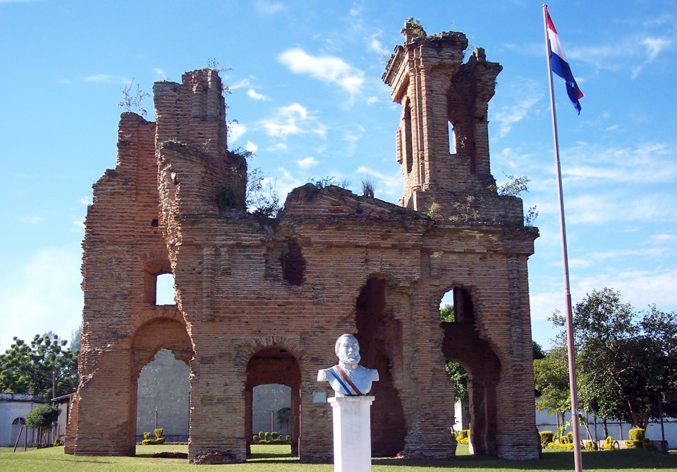
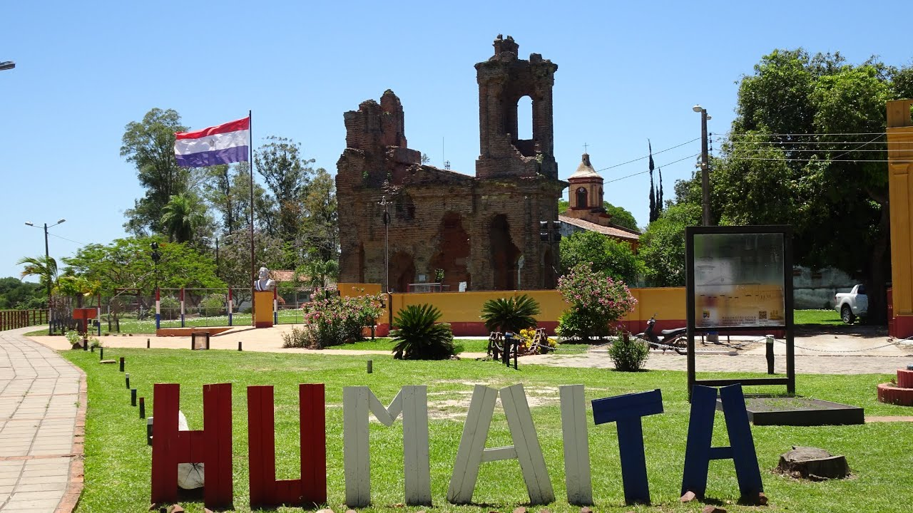
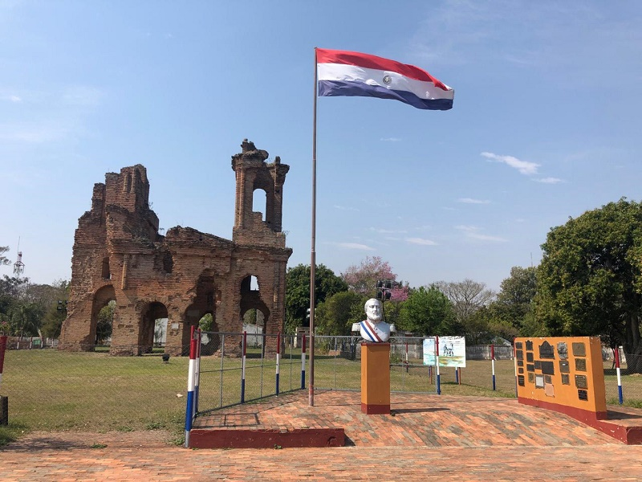
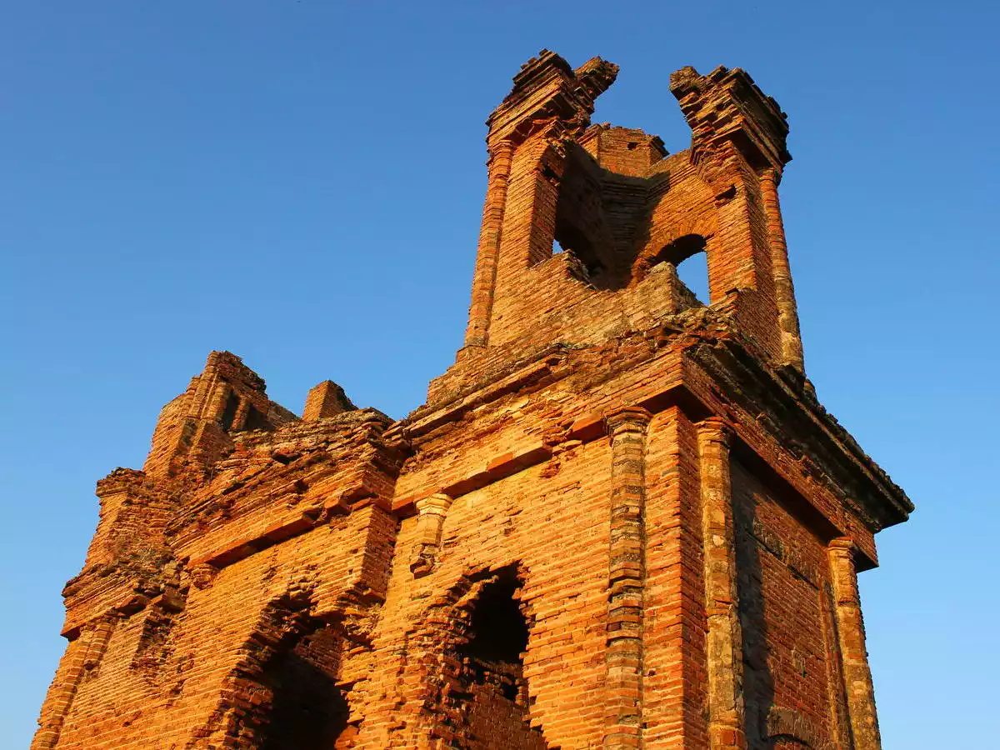

Las famosas Ruinas de Humaitá son lo que queda de la hermosa iglesia de San Carlos Borromeo, la misma fue mandada a construir por Don Carlos Antonio López e inagurado el 1 de enero de 1861. Cuentan que la fiesta de apertura duro ocho días y asistieron altas autoridades paraguayas y argentinas, también compareció a la fiesta de Don Carlos Antonio López con toda su familia. Apadrino la inaguración el entonces brigadier General Francisco Solano López. Hoy las ruinas de la Iglesia de San Carlos Borromeo (Ruinas de Humaitá) que fuera bombardeada durante meses por la flota aliada, es el único vestigio arquitectónico que existe como testimonio de la guerra de la Triple Alianza que involucro a Paraguay contra los aliados Brasil, Argentina y Uruguay. Las ruinas de Humaitá son las restantes de la fortaleza construida por el general Francisco Solano López para proteger la ciudad de la invasión de los ejércitos aliados en el año 1868. Las ruinas están ubicadas en la zona de San José de la Colmena.
Las ruinas de Humaitá se encuentran a unos 10 kilómetros de la ciudad de Humaitá y se extienden por una superficie de 5 hectáreas. Las construcciones son testigos de la Guerra de la Triple Alianza y están consideradas Monumento Histórico Nacional. Las más destacables son la puerta principal, la Torre del Reloj, la cocina militar, el cañón Solano López y las murallas de la fortaleza. El principal atractivo de las ruinas es la Torre del Reloj, también conocida como la Torre López. Fue construida en el año 1865 y conserva en la actualidad todas sus características originales. La Torre López está formada por una estructura de ladrillo y una sala central donde se encuentra el reloj. Tiene tres plantas, con escaleras de piedra que conducen a la cubierta superior. Desde esta altura se puede apreciar una hermosa vista panorámica de la zona. El reloj, aunque no funciona actualmente, se considera un artefacto de gran valor histórico. La cocina militar era la estructura donde se cocinaba la comida para los soldados de la fortaleza. Es una de las estructuras más bien conservadas de las ruinas. Tiene una longitud de 30 metros y se encuentra en una zona bien ventilada para evitar que se formaran humos peligrosos. Además de la cocina, se encuentra la bodega, donde se guardaba la comida y los utensilios de cocina. Las murallas de la fortaleza eran la defensa principal en caso de ataque enemigo. Tenían al menos 5 metros de altura y se encontraban rodeadas de un foso profundo. Las murallas estaban divididas en cinco secciones, con torreones y balcones para las armas de guerra.
La principal función de las murallas era tener una defensa que protegiera a los soldados de las balas y los ataques del enemigo. La puerta principal de la fortaleza es la principal entrada al recinto. Se trata de un acceso con forma de arco, con una puerta muy pesada y resistente. La puerta se abría y cerraba con un sistema de sólidos grilletes y contaba con torreones para el control y observación. Además, se encontraba protegida por almenas y parapetos.
Dentro de las ruinas de Humaitá también se pueden apreciar las ruinas del Cañón Solano López. Este artefacto militar, creado por el propio general Francisco Solano López, era capaz de disparar proyectiles de hasta 6.5 kilos y alcanzaba una distancia de más de tres kilómetros. El Cañón Solano López estaba instalado en uno de los torreones más altos de la fortaleza. Otro atractivo de las ruinas de Humaitá es la capilla militar. Se trata de una estructura pequeña donde se realizaban oficios religiosos. Estaba decorada con símbolos católicos, una cruz en la parte superior y tres arcos en la fachada principal. También se encontraba rodeada por un cementerio. El cementerio de Humaitá era donde se depositaban los cuerpos de los soldados y civiles que fallecían en la fortaleza. No existen muchos vestigios de este cementerio, ya que los huesos fueron trasladados a otro lugar. Sin embargo, todavía se puede observar una pequeña capilla funeraria, que simboliza la dolorosa época de la guerra.
Las ruinas de Humaitá están rodeadas por un ambiente de gran belleza, con árboles centenarios y un rico ecosistema de plantas y animales. El río Paraná, con sus aguas cristalinas, está a unos 100 metros de las ruinas. Se puede realizar un paseo a pie para observar la zona, o realizar un paseo en barco para observarla desde otra perspectiva. A la salida de las ruinas, se encuentra el pueblo de Humaitá. Esta pequeña comunidad se fundó en el año 1575 y se convirtió en un lugar importante durante la guerra de la Triple Alianza. Se caracteriza por ser un lugar tranquilo y rural, con un clima húmedo y una población asequible.
   